Desarrollo de software
Diseño y construcción de soluciones digitales mediante programación y buenas prácticas de desarrollo.
Soy Ivanna Muñoz, estudiante de Ingeniería en Tecnologías de la Información e Innovación Digital. Desarrollo proyectos donde aplico programación, diseño y tecnología para convertir ideas en soluciones digitales.
Ver proyectos01 ÁREAS DE FORMACIÓN
Mi formación combina distintas áreas de las Tecnologías de la Información, desde el desarrollo de software hasta la creación de soluciones web y móviles.
Diseño y construcción de soluciones digitales mediante programación y buenas prácticas de desarrollo.
Creación de sitios y aplicaciones web, considerando estructura, funcionalidad y experiencia de usuario.
Desarrollo de aplicaciones para dispositivos móviles, desde la construcción de interfaces hasta su funcionamiento.
Identificación de necesidades, definición de requerimientos y diseño de soluciones antes de su desarrollo.
Organización, almacenamiento y gestión de información utilizada por sistemas y aplicaciones.
02 TECNOLOGÍAS Y HERRAMIENTAS
Herramientas y tecnologías que utilizo para desarrollar, diseñar y colaborar en la creación de soluciones digitales.
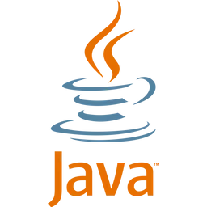
Java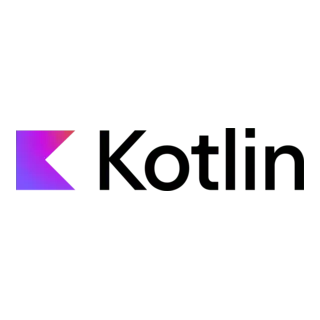
Kotlin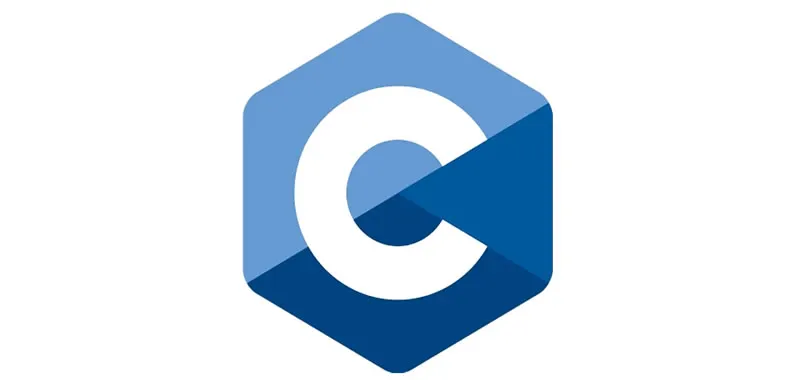
C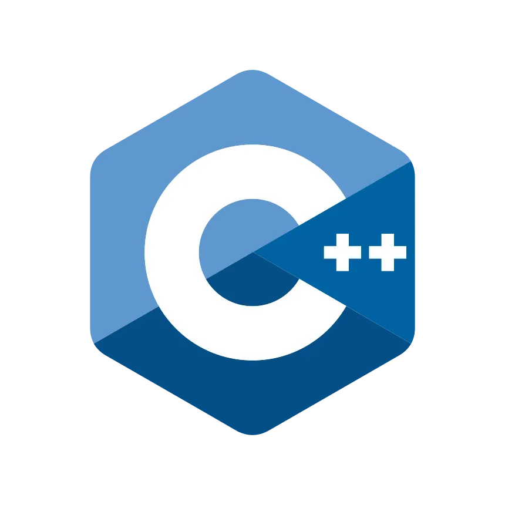
C++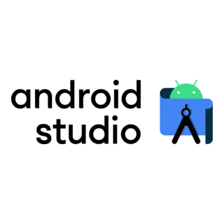
Android Studio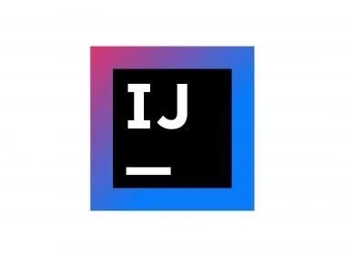
IntelliJ IDEA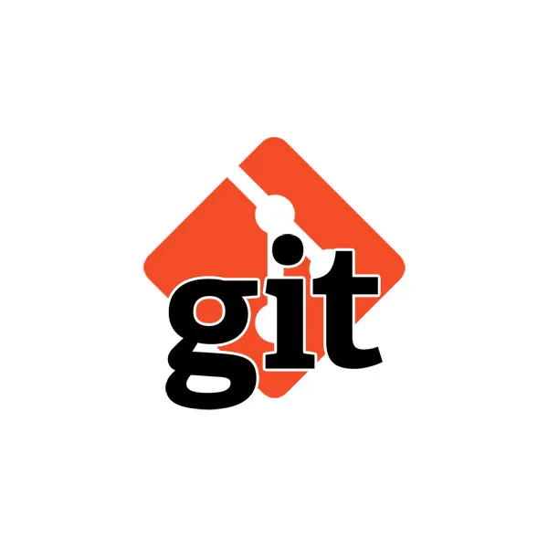
Git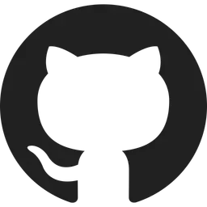
GitHub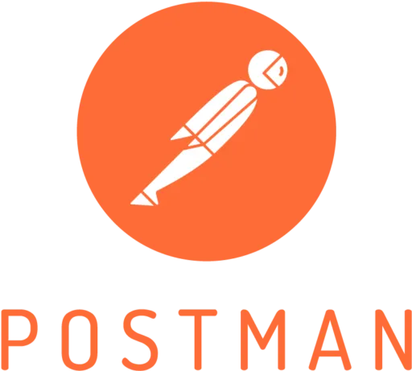
Postman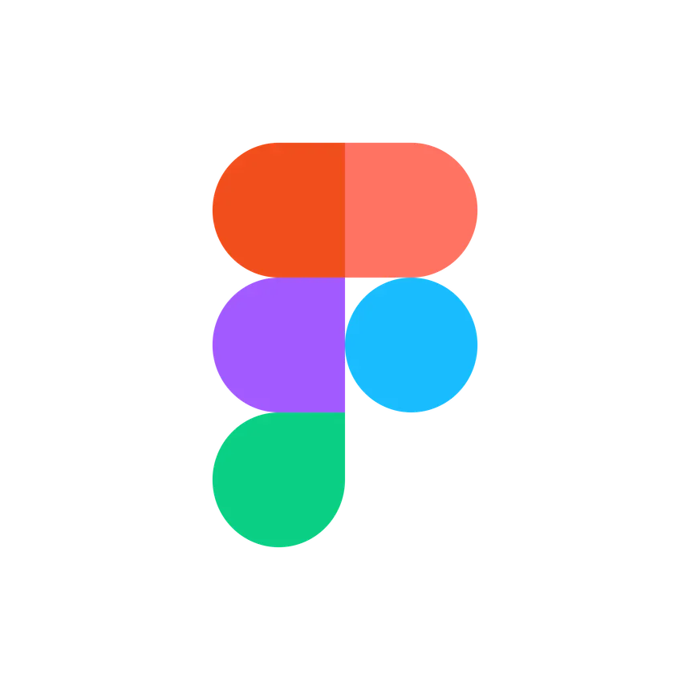
Figma03 PROYECTOS DESTACADOS
Una selección de proyectos donde aplico programación, desarrollo y tecnología para resolver diferentes necesidades.
01 / PLATAFORMA WEB
Plataforma web para la gestión de asesorías académicas que integra estudiantes, docentes, horarios, reservas y sesiones dentro de un mismo sistema.
JavaHTMLCSSJavaScriptMySQL
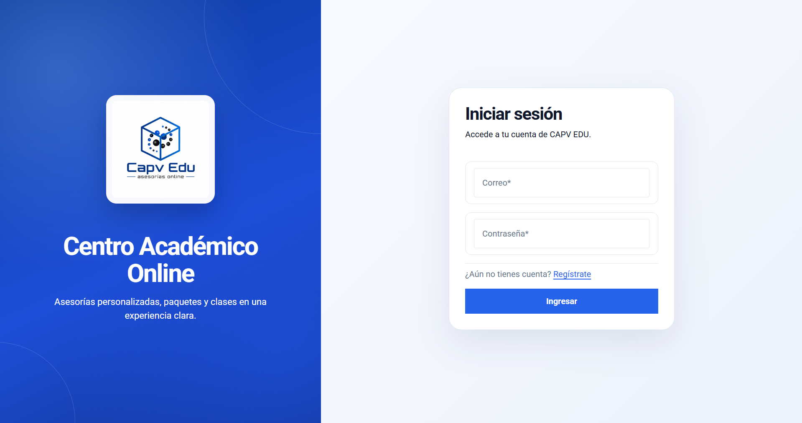
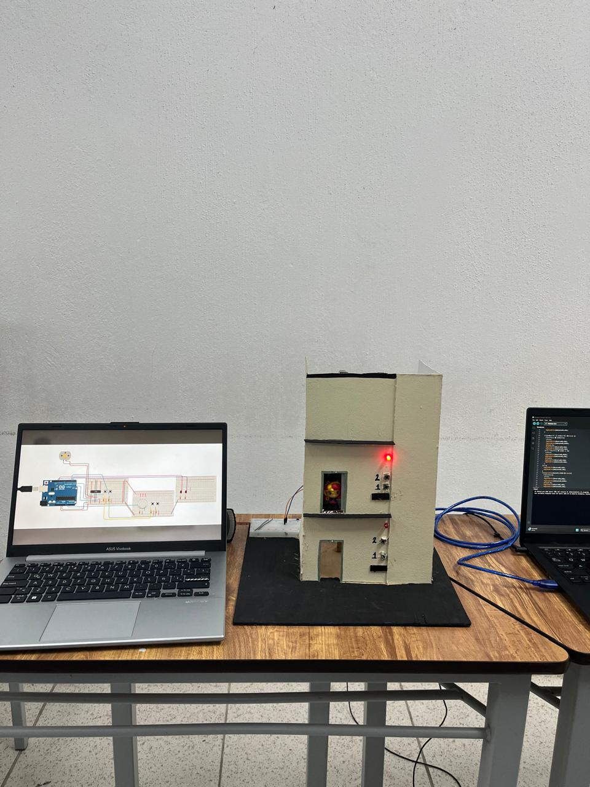
02 / SISTEMA INTELIGENTE
Prototipo de elevador inclusivo desarrollado para ofrecer diferentes formas de interacción mediante comandos de voz, reconocimiento de gestos y controles físicos, con el objetivo de crear una experiencia más accesible e intuitiva.
El sistema integra programación, visión por computadora y hardware para interpretar las diferentes entradas del usuario y controlar el funcionamiento del prototipo.
PythonArduinoMediaPipeOpenCVPyQt5
04 CONTACTO
Si quieres conocer más sobre mis proyectos y seguir mi desarrollo profesional, puedes encontrarme aquí.